Em um repositório Git, é comum existirem várias versões de um mesmo arquivo ao longo do tempo. Cada versão registrada é chamada de commit. Um commit representa um ponto específico da evolução do arquivo dentro do repositório.
git add.No mundo real, sem Git, você poderia ter várias cópias de um arquivo no diretório de trabalho. Com o Git, cada versão é registrada como um commit, mantendo tudo organizado.
Agora vamos conhecer um comando essencial para visualizar diferenças entre versões: o git diff.
git diffPara iniciarmos o uso do git diff, é importante saber o status do repositório após o commit da letra “D”.
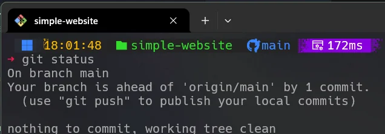
Vamos implementar uma nova feature request adicionando a letra “E” aos arquivos pilots.html, cities.html e names.html.
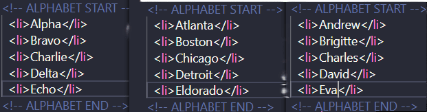
Após as alterações, adicionamos os arquivos ao index usando git add.
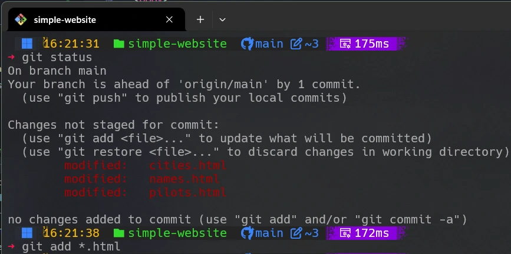
Em seguida, adicionamos a letra “F” aos mesmos arquivos.
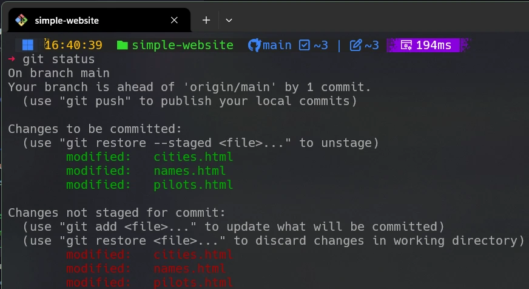
A imagem mostra que a letra “F” ainda não foi adicionada ao index, enquanto a letra “E” já está staged.
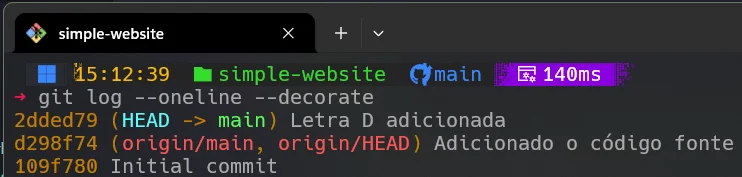
Temos então três situações distintas:
– letra D comitada
– letra E staged
– letra F apenas no diretório de trabalho
O comando git diff é extremamente útil para visualizar diferenças entre estados da base de código.
Ele permite comparar:
git diff HEAD file_namegit diff file_namegit diff --staged file_namegit diff branch1 branch2 file_namegit diff commit1 commit2 file_nameUsaremos o arquivo pilots.html para demonstração.
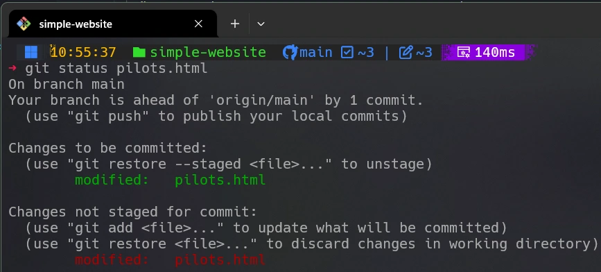
A seguir interpretaremos a saída do comando git diff pilots.html.
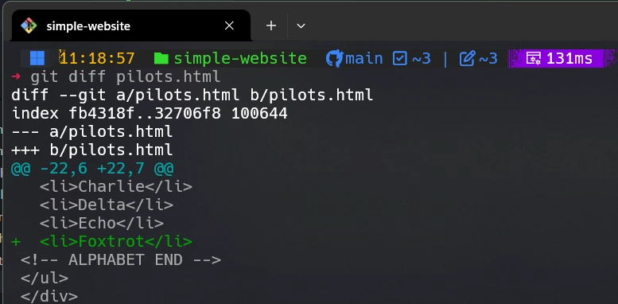
git diffdiff --git a/pilots.html b/pilots.htmlindex fb4318f..32706f8 100644--- a/pilots.html+++ b/pilots.html@@ -22,6 +22,7 @@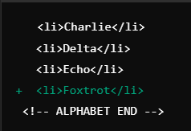
Para ver diferenças staged:
git diff --staged pilots.html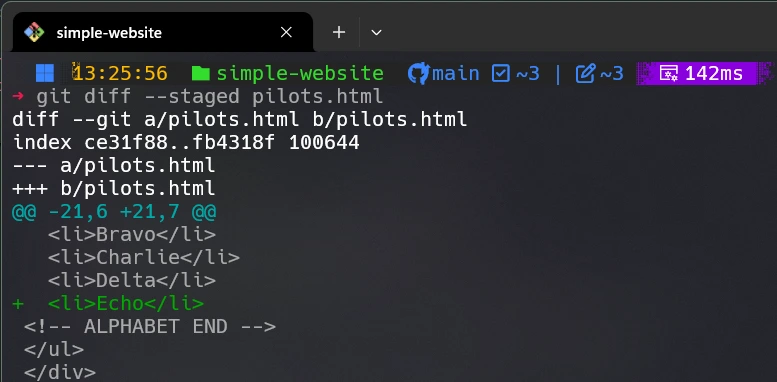
git diff HEAD pilots.html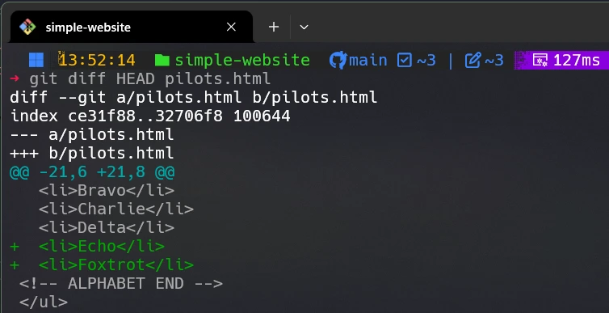
git diff HEAD~1 HEAD pilots.html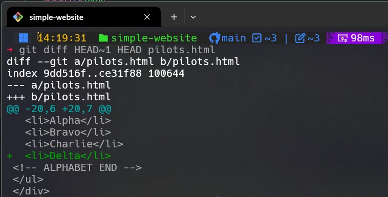
git log --oneline --decorategit diff d298f74 2dded79 pilots.html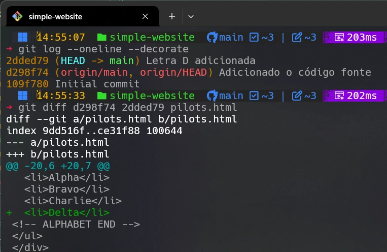
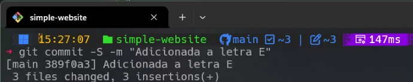
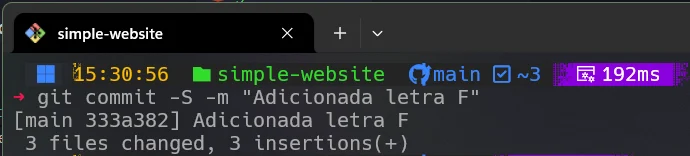
O commit da letra F foi precedido de git add.
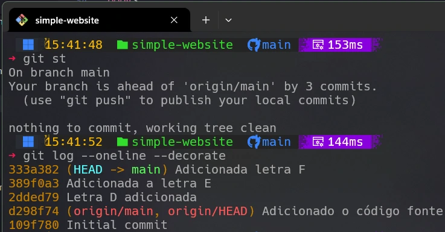
Diagrama Mermaid para o Git Graph
gitGraph
commit id: "0-Initial commit"
commit id: "1-Adicionado o código fonte"
commit id: "2-Letra D adicionada"
commit id: "3-Letra E adicionada"
commit id: "4-Letra F adicionada"